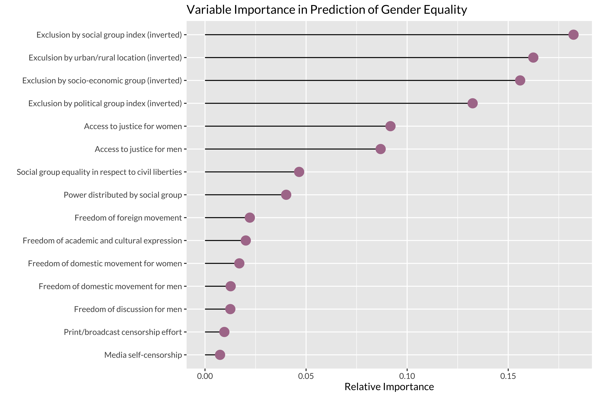

Variable Importance Chart
Through decision tree analysis, I was able to narrow down which indicators in the GSoDi were most important for predicting the level of gender equality. The analysis yielded the following as the most important variables. The relative importance measure (as graphed below) is defined as the the proportion of the total decision-making power acheived by each variable in a decision tree for gender equality based solely upon the indicators listed in the chart.
Further Analysis
Social Group Index
Urban/Rural Location
Socio-Economic Group
Political Group
Decision Tree Process
Choosing Indicators
Pruning the Tree
Final Tree
Calculating Accuracy
Dig Deeper
Still want to see more of the process? Check out the full code on GitHub!